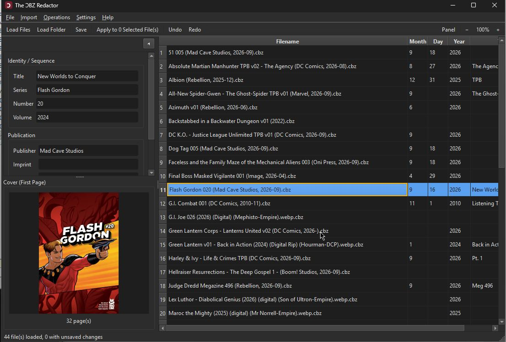

The ƆBZ Redactor
A free CBZ metadata editor for Windows and Linux — read and write ComicInfo.xml without touching the page images, plus opt-in tools for oversized scans and CBR/CBT/CB7 conversion.

What a CBZ is
A CBZ file is a plain ZIP archive of sequentially-named comic page images, optionally with a ComicInfo.xml metadata file at its root — the de facto standard originating from ComicRack and documented by the Anansi Project. Not every CBZ has one; the ƆBZ Redactor creates one on save if it's missing, rather than requiring it up front. Its field handling was checked directly against ComicTagger's own source to stay compatible with what readers like Kavita actually expect.
Features
- Load one or many
.cbz(or.cbr/.cbt/.cb7) files, or a whole folder, into a sortable, column-configurable table; multi-select for editing, saving, or looking up several issues at once. - Bulk edit the full ComicInfo.xml v2.0 field set, plus draft v2.1 fields already understood by ComicTagger and Kavita (Translator, Tags, StoryArcNumber, GTIN) — a field left blank is left untouched, not cleared.
- Metadata lookups against Comic Vine, the Grand Comics Database, and Bedetheque, each with a cover preview and a confirm-before-write review step, and each matched issue's page recorded in Web.
- Offline lookups in your own local copies: the GCD's downloadable database (milliseconds per file, no hourly limit), and your own ComicRack library, converted once from its
ComicDb.xml— only descriptions of comics are copied, never file paths or reading history. - Compare your ComicRack library with the GCD: series and issues the GCD doesn't have, and GCD issues missing credits, characters or a summary your library has — saved as spreadsheets, ready to contribute back.
- Read Filename Tags: scene-style filenames parsed into series, number, year and title, with bracketed tags sorted into Scan Information, Format and Notes — using pattern rules and a list of ~350 release groups. Only whole bracketed phrases count, so title words are never stripped.
- Overwrite review: any import that would replace metadata you already have shows old vs. new side by side, per field, per file, with a checkbox for exactly what to keep.
- Rename / Export / Move and its reverse, Parse Filename → Metadata, both built on a
%series% %number% - %title%-style pattern using any ComicInfo field. An optional ASCII-safe filenames option turns accented letters and typographic punctuation into plain ASCII (é→e, æ→ae, ß→ss). - Search/Replace and Case Conversion across any field, with a before/after preview and a per-row apply checkbox.
- Undo (up to 5 steps) for in-memory metadata edits — bulk edits, lookups, search/replace, case conversion and fixes — and File > Undo Last Rename for renames, even after a restart.
- Validate / Fix Issues: checks each ComicInfo.xml and proposes a fix per problem — page count out of step with the archive, impossible dates, scene tags or file extensions left in the series or title,
[nn]/#007issue numbers, stray spaces, language codes — reviewed per finding, applied as one undoable step. - Collection scan & report: on request, scans your whole organised collection into a small zipped CSV (only each archive's table of contents and ComicInfo are read), then reports what's out of place — files away from their series' folder, split series, file names that break their folder's pattern, duplicates, file names that disagree with ComicInfo, non-ZIP archives, missing ComicInfo, paths over Windows' 260-character limit. Optionally each cover is fingerprinted during the scan — kept in the scan file, or stored inside the CBZ as its ZIP comment (no extra file, no page or ComicInfo change) — so the report can confirm duplicates by cover and spot copies filed under different names. The folder layout is learned from the collection itself; suggested moves and renames are ticked by hand and can be undone. A Fixes tab repairs what can be repaired — wrong PageCount, a missing ComicInfo.xml created from the file name, a .cbr that is really a ZIP, CBR/CB7/CBT files converted to CBZ (originals to the Recycle Bin) — and, where a file's name and its ComicInfo disagree, lets you pick which one is right (set ComicInfo from the name, or rename the file from ComicInfo). Nothing is ticked for you.
- Genre and Language quick-pick lists, drag-to-reorder and hideable columns, and a resizable cover-image panel — all persisted across restarts.
- Size column: each comic's typical page width, color-coded — yellow for low-res (under 1000px), green for acceptable (1000–1599px), orange for oversized (1600px and up). Double-page spreads and a single huge cover don't skew it. A File Size column is available too.
- Resize Images: shrink oversized pages to a target width (1440px by default), with double-page spreads kept at double width. Optional height limit, optional JPEG or WebP output, and a one-click "only oversized files" mode. Never upscales; export copies or resize in place.
- Tag Low-Res Scans: marks low-res comics with a
Low-res scantag in ComicInfo.xml so you can find and replace them later — here, or in a comic server like Komga or Kavita. - Scanner credit pages: tick a "scanned by" page once and it's remembered; every file containing it is flagged and can have it removed — matched visually, so it's recognised even after resizing or re-encoding.
- Find Duplicates: the same comic loaded more than once, matched by its pages rather than its name, with the best copy suggested (highest resolution, most pages, best-tagged).
- Clean Up Archive Contents: pages inside each archive renamed to plain numbers in reading order and taken out of folders — removing release-group names and over-long paths — and junk files (Thumbs.db, .DS_Store, __MACOSX, .nfo, .sfv ...) removed. Pages and ComicInfo.xml untouched.
- CBR, CBT and CB7 support: list them unconverted and convert from the table, convert automatically on load, or be asked each time. An Ext column shows each file's real format, so a ZIP renamed to
.cbris caught (and converted by a simple copy). Every conversion is verified before anything else happens, and originals are kept or moved to the Recycle Bin — never permanently deleted.
Redact, and everything since
Everything below is in the current release. Redact is the one-click path; the individual tools above remain available.
Redact steps: convert CBR/CB7/CBT to CBZ, clean up archive contents, fill empty fields from the filename, the folder path and a database (local GCD or ComicRack first, then Comic Vine when a key is saved), fix ComicInfo issues, tag low-res scans, and rename by pattern once you have used one. Optional, off by default: remove known credit pages, resize oversized pages to 1440 px, and move into folders.
- Redact: one click on the toolbar (or Edit > Redact, Ctrl+Shift+E) runs an editable recipe of steps on the selected files, or on all loaded files after asking. Each changed file is saved in place and its original goes to the Recycle Bin, so the Recycle Bin is the undo. Guesses are applied only at or above a confidence threshold (90% by default); weaker ones are listed under Needs review and never written. Files with unsaved edits or that failed to load are skipped and named in the report. A saved recipe keeps the patterns it was saved with (the editor shows a pattern trail of where each pattern comes from), so changing the Rename / Export pattern later does not silently change what Redact does.
- Move into folders: Rename / Export / Move has a third mode that files each item into a folder tree under a library root, using a pattern with
/in it. The preview shows each new path, nothing is overwritten (a taken name gets “(2)”), and File > Undo Last Rename puts everything back and offers to remove the folders the move created. - Metadata from the folder path: Parse Filename also reads folders. A pattern containing
/is matched against the file name and the folders above it, counted from your library root, with a confidence shown per file. Redact has a matching step that fills only empty fields. - Export / Import Settings (File menu): your recipe, pattern history, column layout and defaults in one JSON file for a new install or a second computer. Import shows every change before applying anything. Passwords, API keys and tokens are never included; tool paths and folders are offered unticked as “this computer only”.
- Command palette (Ctrl+K): type part of any menu command to find and run it. The menus follow one layout in all four apps: File, Edit, View, Metadata, Repair, Tools, Help. Open in Default App is in the right-click menu, and Ctrl+S saves every changed file (Save All).
- API keys stay out of the settings file: the Comic Vine key and the GCD account are stored in your operating system’s credential store (Windows Credential Manager, macOS Keychain or the Linux keyring), entered in one Tools > API Keys… dialog that never shows the stored value. Where there is no credential store, the app asks before falling back to an unencrypted file.
- Validation stamp: Validate / Fix Issues records the result (OK, or ISSUES while something is left to fix) and the time inside the CBZ, in a small
<RedactorScan>element in ComicInfo.xml, written when you Save. Other readers such as ComicRack, Kavita and ComicTagger skip it. If the pages change afterwards, the Status column says “(changed since)”. - Collection tools (Scan Collection Folder, Collection Report, Compare Library with GCD) live in a Collection submenu under Tools.
- Safer saves: Save and Resize replace the original atomically, temp files are cleaned up after any failure, a failed conversion fails just that file instead of stopping the batch, and CBT archives are extracted without following
../names, absolute paths or links.
Requirements
Two downloads on each release: a standalone .exe for Windows, and cbzredactor-linux-x86_64.tar.gz for 64-bit Linux (Ubuntu 22.04+, Debian 12+, Fedora 36+, Mint 21+ and the like — unpack and run; settings live in ~/.config/cbzredactor/). No separate Python install needed on either. Full details and the changelog are in the GitHub repository.
Inspirations
Two older tools shaped parts of this one — no code from either is used:
- ZenCBR by the late Shannon Larratt — the scene-tag handling behind Read Filename Tags (matching whole bracketed phrases against a learned list of release groups) and its name-cleaning rules. The built-in tag list was seeded from a ZenCBR training list.
- CbxConverter by tomek-o — the Size column and the Resize Images options (height limit, output format, width presets), done here in-process with Pillow instead of ImageMagick.
The rest of the family
The ƆBZ Redactor shares its UI and core editing patterns with three sibling tools, via redactor_common:
 The ƎPUB Redactor
The ƎPUB Redactor The ɯP3 Redactor
The ɯP3 Redactor The Ʌideo Redactor
The Ʌideo Redactor